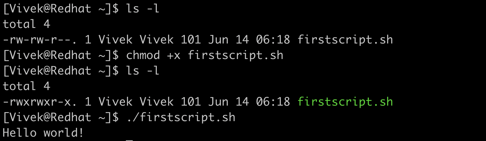
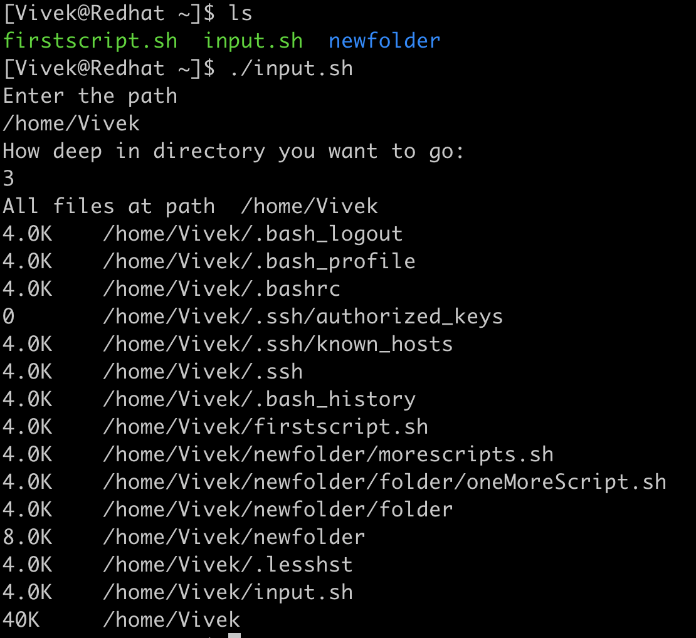
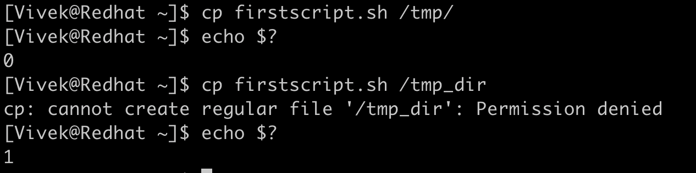
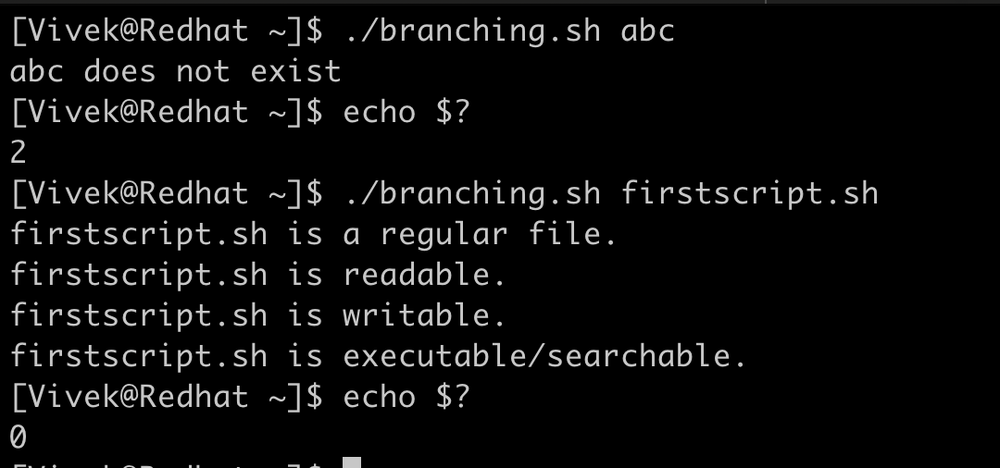
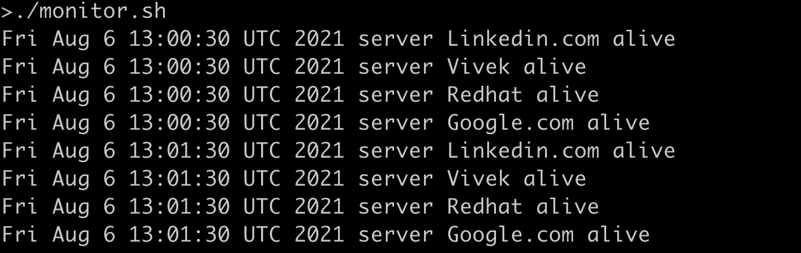
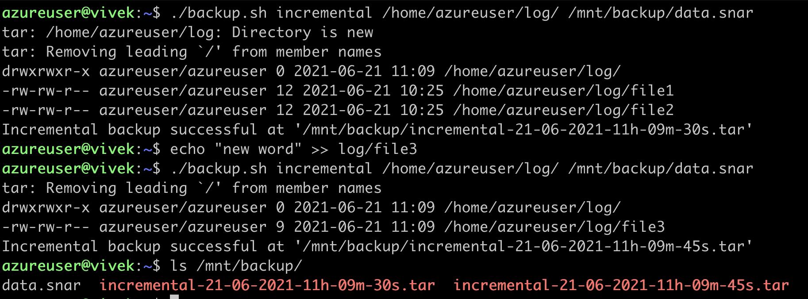

Bash 腳本撰寫
介紹
作為 SRE，Linux 系統是我們日常工作核心，而 bash 腳本也是如此。這是一種由 Linux Bash 直譯器執行的腳本語言。到目前為止，我們已經覆蓋了許多主要在命令列上的功能，現在我們將使用這個命令列作為直譯器來撰寫程式，讓我們的日常工作作為 SRE 更加輕鬆。
撰寫第一個 bash 腳本：
我們從一個簡單的程式開始，整個過程中會使用 Vim 編輯器。
#!/bin/bash
# 這是我的第一個 bash 腳本
# 以 # 開頭的行是註解
echo "Hello world!"
腳本第一行以 “#!” 開頭，稱為 she-bang。它告訴系統執行腳本時該使用哪個直譯器。
除了 #! 外，所有以「#」開頭的行都是註解，執行時會被直譯器忽略。第 6 行展示了我們將執行的「echo」命令。
我們將此腳本保存為 “firstscript.sh”，並使用 chmod 將腳本設為可執行。

接下來使用明確路徑執行腳本，可以看到期望的「Hello World!」輸出。
接受使用者輸入與變數操作：
使用 read 命令接受標準輸入，並使用 bash 的變數。
#!/bin/bash
# 我們會接受標準輸入
# 將列出該路徑下的所有檔案
# 將變數與字串串接
echo "請輸入路徑"
read path
echo "請輸入要遞迴的目錄深度:"
read depth
echo "路徑下的所有檔案 " $path
du -d $depth -all -h $path
我們將路徑讀入變數「path」，深度讀入「depth」，用來列出該路徑下到該深度的檔案和目錄。字串與變數已串接，使用 $（美元符號）來引用變數的值。

我們將這些變數傳給 du 命令，列出該路徑下到指定深度的所有檔案與目錄。
退出狀態（Exit status）：
每個命令或腳本執行完畢後，會回傳一個介於 0 到 255 之間的整數，這稱為退出狀態。值「0」表示命令執行成功，非零值通常表示各種錯誤。

我們使用特殊 shell 變數 $? 取得上一個執行指令或腳本的退出狀態。
命令列參數與 if … else 分支判斷：
傳遞值給腳本的另一種方式是透過命令列參數。Bash 命令列參數通常以 $ 後接索引存取，第 0 個 $0 指本身檔案，$1 是第一個參數，依此類推。$# 用來檢查傳入參數的個數。
程式中做出判斷是基本功能，為了處理不同條件，我們使用 if … else 語句，或其巢狀變形。
以下腳本結合了多個概念，目的在取得檔案屬性。
第 4 到 7 行是 bash 中 if 判斷的標準範例。語法說明如下：
If [ 條件 ]; then
要執行的 if 代碼區塊
else
要執行的 else 代碼區塊
fi
fi 用來結束 if … else 區塊。我們比較參數數量 ($#) 是否等於 1，若不等會提示只能傳入一個參數並以狀態碼 1 （非成功）結束。可以有一個或多個 if 判斷沒有 else，但反過來不合理。
運算子 -ne 是整數不等於的判斷，意為「整數1 不等於 整數2」。其他比較運算子如下：
| 運算 | 說明 |
|---|---|
| num1 -eq num2 | 檢查第一個數字是否等於第二個數字 |
| num1 -ge num2 | 檢查第一個數字是否大於或等於第二個數字 |
| num1 -gt num2 | 檢查第一個數字是否大於第二個數字 |
| num1 -le num2 | 檢查第一個數字是否小於或等於第二個數字 |
| num1 -lt num2 | 檢查第一個數字是否小於第二個數字 |
#!/bin/bash
# 此腳本評估檔案狀態
if [ $# -ne 1 ]; then
echo "請傳入一個檔案名稱作為參數"
exit 1
fi
FILE=$1
if [ -e "$FILE" ]; then
if [ -f "$FILE" ]; then
echo "$FILE 是一般檔案。"
fi
if [ -d "$FILE" ]; then
echo "$FILE 是目錄。"
fi
if [ -r "$FILE" ]; then
echo "$FILE 可讀。"
fi
if [ -w "$FILE" ]; then
echo "$FILE 可寫。"
fi
if [ -x "$FILE" ]; then
echo "$FILE 可執行/可搜尋。"
fi
else
echo "$FILE 不存在"
exit 2
fi
exit 0
有許多檔案測試表達式用來判斷檔案狀態，例如 bash 中的 “-e” 在第 10 行判斷傳入參數的檔案是否存在，存在為真，否則假。以下是常用的檔案測試表達式：
| 檔案操作 | 說明 |
|---|---|
| -e file | 檔案存在 |
| -d file | 檔案存在且是目錄 |
| -f file | 檔案存在且是一般檔案 |
| -L file | 檔案存在且是符號連結 |
| -r file | 檔案存在且具有讀取權限 |
| -w file | 檔案存在且具有寫入權限 |
| -x file | 檔案存在且具有執行權限 |
| -s file | 檔案存在且大小大於零 |
| -S file | 檔案存在且為網路 socket。 |

當檔案找不到時，退出狀態為 2。若檔案存在，則列印出其屬性並以 0 成功狀態退出。
迴圈來重複執行任務：
我們通常會遇到重複性任務，使用迴圈可將重複任務以有結構的程式碼實作。bash 支援多種迴圈語句：
| 迴圈 | 語法 |
|---|---|
| while | while [ 條件 ] do [ while 區塊程式碼 ] done |
| for | for 變數 in 1,2,3 .. n do [ for 區塊程式碼 ] done |
| until | until [ 條件 ] do [ until 區塊程式碼 ] done |
#!/bin/bash
# 監控伺服器的腳本
hosts=`cat host_list`
while true
do
for i in $hosts
do
h="$i"
ping -c 1 -q "$h" &>/dev/null
if [ $? -eq 0 ]
then
echo `date` "伺服器 $h 正常"
else
echo `date` "伺服器 $h 已離線"
fi
done
sleep 60
done
監控伺服器是 SRE 的重要工作。檔案 “host_list” 包含想監控主機清單。
我們使用無限的 while 迴圈，每 60 秒執行一次。對 host_list 中的每個主機，我們 ping 該主機並透過退出狀態判斷 ping 是否成功，成功則表示伺服器在線，否則是離線。

腳本輸出顯示它每分鐘執行一次，並列出目前時間戳記。
函式（Function）
開發者通常讓程式模組化，以免每次在各處重複撰寫相同程式碼。函式可達成此目的。
函式會被呼叫與傳入參數，並依參數產生結果。
前述備份過程可藉下面腳本自動化，並學習更進階的字串比較、函式及邏輯 AND 與 OR 運算。
以下程式中「log_backup」是函式，直到被呼叫前不會執行。
第 37 行為先執行，檢查傳入腳本的參數數目。
有多種邏輯運算子如 AND、OR、XOR 等。
| 邏輯運算符 | 符號 |
|---|---|
| AND | && |
| OR | | |
| NOT | ! |
若傳錯參數給腳本「backup.sh」，會提示正確用法。我們需告知想做的是增量備份或完整備份，以及要備份的目錄路徑。增量備份時會多傳一個 meta 檔案參數，用來儲存先前已備份檔案的資訊（通常 meta 檔為 .snar 副檔名）。
#!/bin/bash
# 增量與完整備份腳本
backup_dir="/mnt/backup/"
time_stamp="`date +%d-%m-%Y-%Hh-%Mm-%Ss`"
log_backup(){
if [ $# -lt 2 ]; then
echo "用法: ./backup.sh [backup_type] [log_path]"
exit 1;
fi
if [ $1 == "incremental" ]; then
if [ $# -ne 3 ]; then
echo "用法: ./backup.sh [backup_type] [log_path] [meta_file]"
exit 3;
fi
tar --create --listed-incremental=$3 --verbose --verbose --file="${backup_dir}incremental-${time_stamp}.tar" $2
if [ $? -eq 0 ]; then
echo "增量備份成功於 '${backup_dir}incremental-${time_stamp}.tar'"
else
echo "增量備份失敗"
fi
elif [ $1 == "full" ];then
tar cf "${backup_dir}fullbackup-${time_stamp}.tar" $2
if [ $? -eq 0 ];then
echo "完整備份成功於 '${backup_dir}fullbackup-${time_stamp}.tar'"
else
echo "完整備份失敗"
fi
else
echo "參數錯誤"
echo "用法: ./backup.sh [incremental|full] [log_path]"
exit 2;
fi
}
if [ $# -lt 2 ] || [ $# -gt 3 ];then
echo "用法: ./backup.sh [incremental|full] [log_path]"
exit 1
elif [ $# -eq 2 ];then
log_backup $1 $2
elif [ $# -eq 3 ];then
log_backup $1 $2 $3
fi
exit 0
傳入三個參數做增量備份，會在「/mnt/backup/」路徑建立備份檔，每個檔案名稱包含時間戳記。

在函式內傳入的參數可用 $ 加索引的方式存取，第 0 個代表函式本身，$1 是第一個參數，依此類推。#$ 用來檢查傳入函式的參數個數。
傳入字串「incremental」或「full」會被函式內比較並執行對應區塊。以下是更多可執行在字串上的操作：
| 字串操作 | 說明 |
|---|---|
| string1 == string2 | 如果 string1 等於 string2 則回傳真，否則假。 |
| string1 != string2 | 如果 string1 不等於 string2 則回傳真，否則假。 |
| string1 ~= regex | 如果 string1 符合延伸正規表達式則回傳真。 |
| -z string | 如果字串長度為零則回傳真，否則假。 |
| -n string | 如果字串長度非零則回傳真，否則假。 |